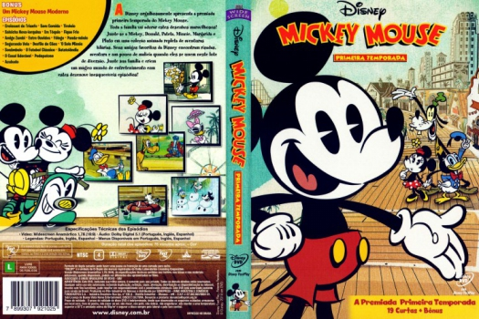

País:United States, 76 minutos
Idiomas falados:Espanhol, Inglês, Português
Gênero(s):Animação, Comédia, Drama
Diretor(s):Paul Rudish, Dave Wasson, Clay Morrow, Eddie Trigueros, Alonso Ramirez Ramos
Escritor(es):Paul Rudish, Darrick Bachman, Heiko von Drengenberg, Clay Morrow, Dave Wasson
Codec:MPEG-2 (DVD)
Número: 5816


Certificado:L
Sinopse:
Nesta série de curtas, Mickey Mouse se encontra em situações bobas em todo o mundo! De Nova York a Paris a Tóquio, Mickey experimenta novas aventuras com seus amigos!
Elenco:


Tipo de mídia: DVD5,
Legendas: Espanhol, Inglês, Português, Sem Legendas
Alugado: Não
Tela: Anamorphic Widescreen